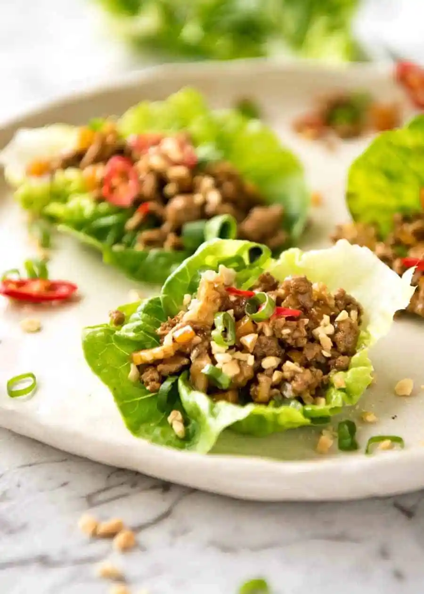

San Choy Bow

Description
This savoury Chinese dish is excellent as both a starter and a full meal.
Ingredients
Filling
- Baby Gem lettuce
- 500g chicken mince
- 1 medium onion, diced
- 2 tins water chestnuts, drained & finely chopped
- 1 tsp minced ginger
Sauce
- 3 tsp cornflour
- 6 tbsp water
- 3 tbsp soy sauce
- 4 tbsp oyster sauce
- 2 tsp sesame oil
- 2 tbsp rice wine vinegar
Instructions
- Mix cornflour with 1 tbsp water until lump free. Then add remaining Sauce ingredients and mix.
- Heat oil in a wok or large skillet over high heat. Add garlic and ginger, give it a quick stir then add onion.
- Cook for 1 minute then add chicken. Cook chicken until it turns white.
- Add all of the vegetables, then cook for 2 minutes.
- Add sauce and cook until it thickens and becomes glossy.
- Transfer to a serving bowl. Lay out lettuce leaves.
- To serve, spoon filling into a lettuce leaf.